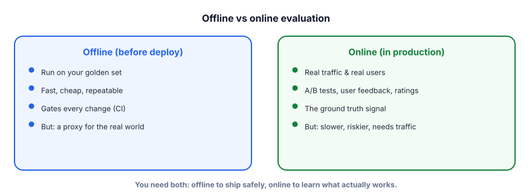

Offline vs online evals
Offline evals test the system on your golden set before you ship. They are fast, cheap and repeatable.
Online evals watch real users after you ship.
An A/B test sends some users to the new version and compares results, like how many problems get solved.
Offline is a practice test; online is the real thing.
Use both, and turn online failures into new offline cases.
Offline eval is a driving test in an empty car park: same cones every time, cheap, safe, and you can repeat it. Online eval is watching how the new driver does on real roads in rush hour. You would never skip the car park test, but passing it does not prove you can handle a bus cutting in.
| In the picture | In the real system |
|---|---|
| The car park test with the same cones | Offline eval on a fixed golden set |
| Real roads in rush hour | Online eval on production traffic |
| A bus cutting in | Real user queries your golden set never imagined |
| Comparing two learner drivers on the same roads | An A/B test: two versions, real users, one metric chosen in advance |
Where the picture breaks. A real learner driver gets better with practice, while your users keep changing what they ask, so the 'road' moves under you even if the system stays the same.
Going deeper
Your golden set tells you a change is good before you ship. Real users tell you if it’s actually good after you ship. Mature teams use both — and know the gap between them is where surprises live.
Two complementary measurements
So far we’ve done offline eval: run the system on a fixed golden set, score it, decide. It’s fast, cheap, and repeatable — perfect for gating changes. But a golden set is a proxy: it’s your best guess at what real usage looks like, and it can’t capture everything (new query types, real user behavior, edge cases you didn’t imagine). Online eval measures the system on real production traffic — via A/B tests, user feedback, and outcome metrics. It’s the ground truth, but it’s slower, needs live traffic, and risks exposing users to a worse version.

Offline evaluation scores the system on a fixed dataset (your golden set) before deployment — fast, repeatable, cheap. Online evaluation measures real production behavior: an A/B test sends some users to the new version and compares outcomes; user feedback (thumbs up/down, ratings, corrections) and outcome metrics (task completion, resolution rate, retention) reveal true impact. Offline is a proxy; online is ground truth.
What online signals look like
| Signal | What it tells you | Watch out |
|---|---|---|
| A/B test | Did the new version improve a real metric vs the old? | Needs enough traffic for significance; pick the metric carefully |
| Thumbs / ratings | Direct quality feedback per response | Sparse and biased (mostly unhappy users click) |
| Implicit signals | Did they accept the answer, retry, escalate, churn? | Noisy; correlate, don’t over-interpret single events |
| Guardrail metrics | Did latency/cost/error rate stay healthy? | A quality win that tanks latency isn’t a win |
Online eval starts with logging the right things per request so you can measure real outcomes. No special service needed to begin.
import json, time
def log_interaction(request_id, version, query, answer, latency_ms):
record = {
"id": request_id, "version": version, # which variant (for A/B)
"query": query, "answer": answer,
"latency_ms": latency_ms, "ts": time.time(),
"feedback": None, # filled in when the user reacts
}
append_to_log(record)
def record_feedback(request_id, thumb): # user clicked 👍/👎
update_log(request_id, {"feedback": thumb})
# later: compare versions on real traffic
# win_rate(version="B") vs win_rate(version="A") → did B actually do better?This is the raw material of online eval: every interaction tagged with its version, latency, and (when available) user feedback, so you can compare variants on the only data that ultimately matters — real usage.
Assumptions: an e-commerce assistant handles 200,000 sessions a day. The primary metric, chosen before the test, is resolution rate (the session ends without escalation to a human). Baseline is 62%. The candidate prompt already passed the offline gate.
- Smallest lift worth detecting. The team decides 2 points (62% to 64%) is worth shipping.
- Sample size per arm (95% confidence two-sided, 80% power): n = (1.96 + 0.84)^2 x (0.62 x 0.38 + 0.64 x 0.36) / 0.02^2 = 7.84 x 0.466 / 0.0004, about 9,100 sessions per arm.
- Exposure. Send 5% of traffic to each arm: 10,000 sessions per arm per day. You reach the sample size in about one day, but run seven days anyway so weekday and weekend behaviour are both covered. Decide in advance not to stop early just because day 2 looks good.
- Guardrails. p95 latency must stay under 3 s, cost per session within +10%, escalation of high-value orders must not rise. Any guardrail breach stops the test regardless of the primary metric.
- Thumbs signal. If 3% of sessions leave a rating, that is 300 ratings per arm per day, skewed toward angry users. Use them to find failure examples, not to decide the winner.
- Close the loop. Sample 200 failed sessions from the candidate arm, label them, and add the new failure types to the golden set so the next offline gate already knows them.
Note: the 1.96 and 0.84 values are the standard normal quantiles for 95% two-sided confidence and 80% power.
- Offline (golden set) is fast, cheap, repeatable — use it to gate every change before shipping.
- Online (A/B, feedback, outcomes) is the ground truth — use it to learn what actually works.
- Offline is a proxy; the offline–online gap is where surprises (and learning) live.
- Watch guardrail metrics (latency, cost, errors) alongside quality — a slow “better” answer isn’t better.
- Feed online failures back into the golden set so offline gets more representative over time.
A prompt change improves your offline golden-set score by 8%, so you ship to 100% of users immediately. Why is that risky?
Offline evals pass in CI but production quality dropped. Most likely cause?
On day 2 of a planned 7-day A/B test, the new version is ahead by 3 points with p = 0.04. The product manager wants to stop and ship. What is the problem?
1. Give one thing offline evals catch that online can’t, and one thing online catches that offline can’t.
2. Why are thumbs-up/down ratings a biased signal, and how would you supplement them?
3. You ship a change that improves answer quality but quietly doubles latency. Which eval should have caught it, and how?
▸ Show solutions & reasoning
1. Offline catches regressions before any user is affected (cheap, repeatable, on known cases) — online can’t prevent harm before exposure. Online catches what your golden set never imagined — novel query types, real user behavior, and true outcomes (did they actually get helped?) — which offline, being a fixed proxy, structurally can’t see. They’re complementary by design.
2. Ratings are sparse and self-selected: most users don’t click, and those who do skew toward extremes (especially the frustrated). So they over-represent unhappy cases and miss the silent majority. Supplement with implicit signals (did they accept the answer, retry, escalate, complete the task?) and periodic structured surveys or human review of sampled interactions — triangulate rather than trust one noisy signal.
3. A guardrail metric on latency — measured both offline (you can time responses on the golden set) and online (monitor p95 latency per version). Quality evals alone would have shown a win and missed the regression. Always pair quality metrics with cost/latency/error guardrails so an improvement on one axis can’t silently wreck another (this is exactly Track 8’s concern).
The magic happens when offline and online feed each other. Online surfaces reality — a cluster of queries your bot handles badly, a new way users phrase things, an edge case you never tested. You harvest those failures, label them, and add them to the golden set. Now your offline eval is more representative, so the next change is gated against the real problems, and you catch them before shipping. Over months this loop drags your proxy ever closer to reality, which is why teams with strong observability (Lesson 6.5) improve so much faster: they have a firehose of real failures to learn from.
A few practical disciplines. Run A/B tests with a clear primary metric chosen in advance (resolution rate, task success, accepted-answer rate) and enough traffic to reach significance — don’t peek and stop early. Watch guardrail metrics (latency, cost, error/refusal rates) so a quality win can’t hide a serious regression. And remember the asymmetry: offline lets you fail safely and cheaply, online lets you learn truthfully but at the cost of real exposure — so the standard flow is offline gate → small online rollout → full rollout, never straight to 100%. Master this and “shipping an LLM change” becomes a controlled, measured process instead of a leap of faith.
labs/08_llmops.pyFree and offline once set up: Ollama with qwen2.5:7b, plus the packages in labs/README.md. From the course folder:
python labs/08_llmops.pyWhat to look for: The lab writes one JSONL tracing record per request with fields such as prompt version, latency and cost. That per-request, version-tagged log is the raw material of online eval. Run it with two prompt versions and group the records by version to compare latency and cost; the lab does not run a real A/B test with users, so the 'outcome' column is something you would add in production.
Small samples: these labs use 5 to 20 cases so they run in minutes on a laptop. Where they report a rate, they print n and a 95% Wilson interval. Read them as a demonstration of the mechanism, not as a measured rate for your system; for that you need hundreds of cases and several seeds.
▸ Recorded output (our run, 2026-11-03, qwen2.5:7b on a laptop GPU)
semantic similarity to the cached 'track my order': paraphrase=0.657 different intent (cancel)=0.523
semantic hits at threshold 0.9: 0
Look: a threshold low enough to catch the paraphrase would sit close to the wrong-intent score.
Serving 'how to track' to someone who asked 'how to cancel' is worse than a cache miss. Tune the
threshold on labelled pairs, scope caches per intent/tenant, and log every semantic hit for review.
traces written to traces.jsonl; first span:
{"trace_id": "54d669838c1f47758c9099aba0110b3f", "name": "chat qwen2.5:7b", "gen_ai.operation.name": "chat", "gen_ai.provider.name": "ollama", "gen_ai.request.model": "qwen2.5:7b", "gen_ai.prompt.name": "support_answer", "gen_ai.prompt.version": 2, "prompt.hash": "5ab3d11ffb3b", "user.id": "u-123",
4) Prompt version rollout: v1 vs v2 on the same question, both traced
v1 hash=47ed77f326d6 -> "Yes, you can return innerwear as long as it meets your retailer's return policy conditions, such as being unus"
v2 hash=5ab3d11ffb3b -> 'Please contact support for specific return policies on innerwear.'
Check the facts too: store policy (labs/data/kb.json, ret-01) says innerwear cannot be returned. Neither
prompt has retrieval, so any 'yes' is a hallucination; the version that defers to support is the safer one.
Look: the trace links every answer to an exact prompt hash and model, so a bad answer is debuggable,
and a rollout is a registry change you can roll back, not a code edit buried in a deploy.Your numbers will differ a little run to run. Full log: labs/outputs. Source: labs/08_llmops.py.
Warm-up. A feature gets 40,000 sessions a day and 2% leave a thumbs rating. Of the ratings, 70% are thumbs-down. Does that mean 70% of sessions are bad?
▸ Solution
No. 40,000 x 0.02 = 800 ratings a day, and people who rate are self-selected, mostly the unhappy ones. The 70% describes raters, not all users. Use implicit signals on all 40,000 sessions (accepted answer, retry within 60 s, escalation) and a weekly human review of a random sample of, say, 100 sessions to estimate the true bad rate.
Transfer. Your offline golden set says v2 is better by 6 points, but the A/B test shows no difference in resolution rate. List three explanations and how you would check each.
▸ Solution
1) The golden set is not representative: compare its intent mix with last month's traffic; if it over-weights a category v2 improved, the offline gain will not show up live. 2) The metric gap: offline scores answer quality while resolution also depends on things like policy or UI; read 100 sessions where v2 answered well and still escalated. 3) The test lacks power for a smaller real effect: compute the minimum detectable effect from your traffic; if it is 3 points, a real 1-point gain is invisible. Then fold the live failure types into the golden set.
Stretch. Design the rollout plan for a new RAG model on a bank's internal policy assistant used by 8,000 staff, where wrong answers carry compliance risk.
▸ Solution
Stage 0, offline: full golden set plus a locked compliance set where every critical case must pass. Stage 1, shadow: run the new version on live questions without showing answers; a judge and a compliance reviewer compare 300 shadow answers with production answers. Stage 2, canary: 5% of staff, about 400 people, for one week, with guardrails on refusal rate, citation coverage and latency, plus a one-click 'wrong answer' report reviewed daily. Stage 3, 50/50 A/B for two weeks with a pre-registered metric such as answer acceptance without follow-up. Stage 4, full rollout with a rollback switch. Every reported wrong answer becomes a golden-set case before the next release.
Junior What is the difference between offline and online evaluation?
▸ Model answer
Offline evaluation runs the system on a fixed dataset, such as a golden set, before release. It is cheap, fast and repeatable, so it is the gate for every change. Online evaluation measures behaviour on real traffic after release, through A/B tests, user feedback and outcome metrics like resolution or task completion. Offline is a proxy and can miss new kinds of queries; online is the ground truth but is slower and exposes real users. You use offline to block obvious regressions and online to confirm the change helps real people.
Mid How do you choose the primary metric for an A/B test of an LLM feature?
▸ Model answer
It should reflect the outcome the business cares about, move within the test window, and be measured on every session. For a support bot that is often resolution without escalation; for a writing assistant, the share of drafts accepted with light edits. I would pick one primary metric before the test, size the test for the smallest lift worth shipping, and define guardrails such as latency, cost and complaint rate that can stop the test on their own. Thumbs ratings are a poor primary metric because they are sparse and skewed; I use them to find examples.
Senior Offline scores keep rising release after release, but customer satisfaction is flat. What do you do?
▸ Model answer
I would treat it as the proxy drifting away from reality. First, compare the golden set's distribution with current traffic: intents, languages, length, new products. Second, read a random sample of live sessions with low satisfaction and label why they failed; if those failure types are missing from the golden set, the eval has gone stale. Third, check whether the offline metric rewards something users do not value, like longer answers. Then fix the loop: a weekly job that samples production failures into the set, a locked set refreshed each quarter, and an online metric reported next to every offline score.
Both offline and online eval depend on seeing what your system actually did on each request. That visibility is observability. Next: tracing & observability.
In one line: Test on your practice set before shipping, then watch real users to learn what actually works.